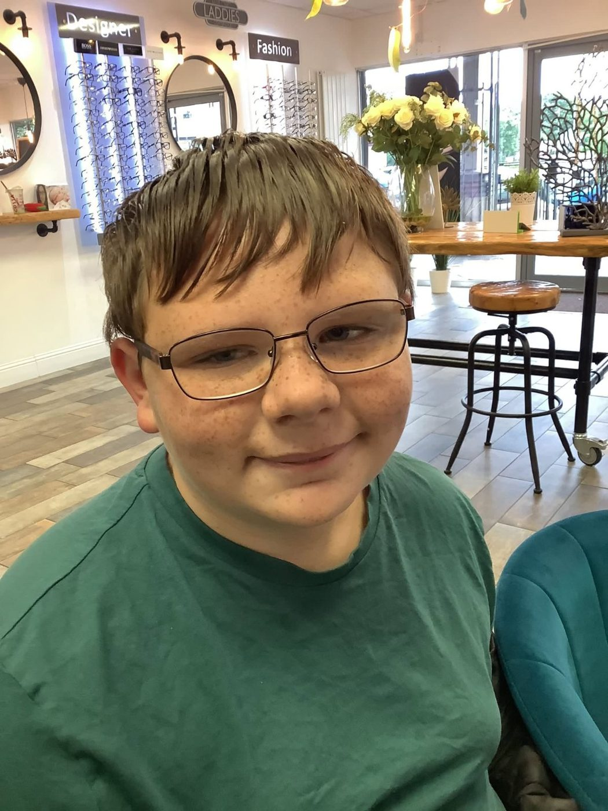
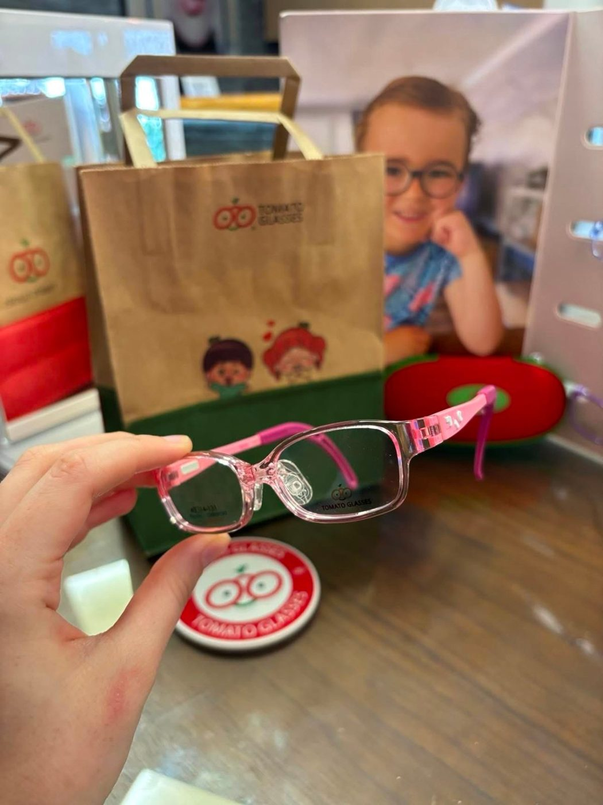

Any age. No reading needed.
We see children of all ages. Your child doesn't need to be able to read or know their letters — we use pictures, shapes and gentle, fun techniques to check their vision and the health of their eyes.
Children rarely complain about their sight, because they assume everyone sees the way they do. Regular eye tests are the best way to pick up problems early, when they're easiest to treat.
- Free NHS eye tests for all children in Scotland — usually every year
- Free NHS glasses through the voucher scheme for under-16s, and 16–18-year-olds in full-time education
- Plenty of time, and a relaxed, welcoming practice
Could your child need glasses?
If you notice any of these, book an eye test — even if your child has had one recently.
- Squinting, frowning or tilting their head to see
- Sitting very close to the TV, or holding books and screens close
- Rubbing their eyes often, or complaining of headaches
- An eye that turns in or out
- Losing their place when reading, or avoiding close-up activities
- Clumsiness or poor hand–eye coordination
- Struggling to see the board at school
Slowing short-sightedness, early.
Short-sightedness (myopia) is becoming much more common in children, and it usually gets worse as they grow. Higher levels of myopia can increase the risk of eye problems later in life — so slowing it down in childhood really matters.
ZEISS MyoCare lenses are specially designed to help slow the progression of myopia in children, while giving them clear, comfortable vision in everyday glasses.
- A full assessment to see whether MyoCare is right for your child
- Check-ups every six months to monitor progress — included in the programme
- Advice on habits that help, such as time outdoors and regular breaks from close-up work
The cost varies depending on your child's prescription and needs — we'll talk everything through with you at the assessment.


Glasses for the littlest faces.
We're an approved stockist of Tomato Glasses — award-winning frames designed especially for babies, toddlers and young children.
With adjustable arms and nose pads, soft flexible materials and bright colours children love, they stay comfortably in place and can be adjusted as your child grows.
We also carry a wide choice of children's and junior frames, including styles available free under the NHS voucher scheme.
Book your child's eye test.
Free on the NHS for all children in Scotland — book online or give us a call.